Topologias de Rede
Física vs Lógica e Arquiteturas
Aula 02 | Prof. Will
Recapitulando Aula 01
- Rede: Dispositivos interligados compartilhando recursos.
- LAN/MAN/WAN: Classificação por tamanho geográfico.
- Cliente-Servidor: Centralização e controle.
O que é Topologia?
Vem do grego Topos (lugar) + Logos (estudo).
É o "mapa" da rede. Define como os computadores estão conectados e como a informação viaja entre eles.
Física vs Lógica
👀 Topologia Física
Como os cabos estão passados fisicamente. O layout real (o que você vê ao olhar para o teto/chão).
🧠 Topologia Lógica
Como os dados fluem dentro dos cabos. O sinal elétrico segue qual caminho? (Ex: Pode ser fisicamente estrela, mas logicamente barramento).
Principais Topologias
Barramento
(Bus)
Anel
(Ring)
Estrela
(Star)
Malha
(Mesh)
Árvore
(Tree)
Híbrida
(Hybrid)
1. Topologia em Barramento (Bus)
Todos os computadores são ligados a um único cabo central (backbone).
Os dados viajam por todo o cabo e "passam na porta" de todos os computadores.
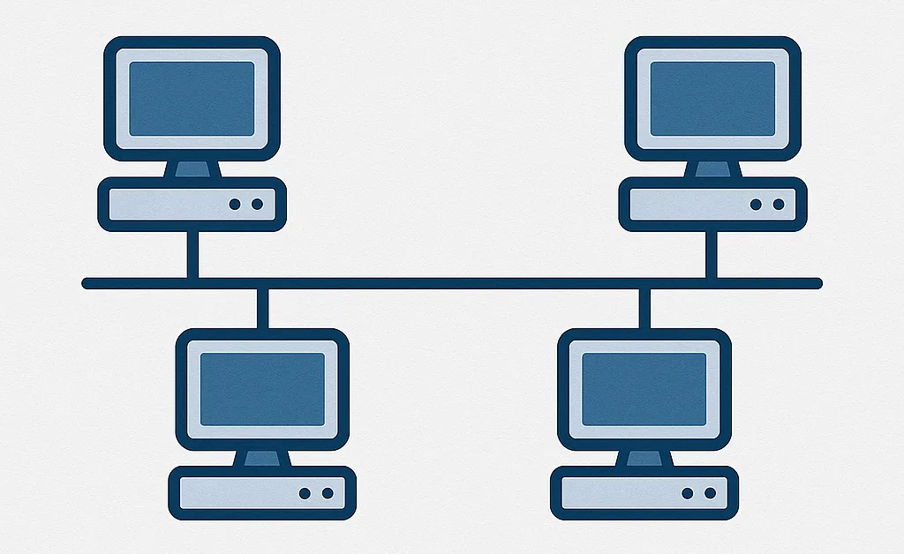
Barramento: Características
- Uso comum nas décadas de 80/90.
- Geralmente usa cabo Coaxial.
- Conectores do tipo "T" (BNC).
- Broadcast: Se A envia para C, B também "ouve" (mas ignora).
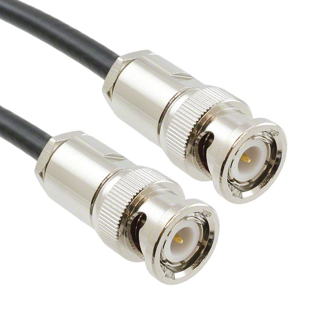
O Problema da Colisão
Como só existe uma estrada, se dois computadores tentarem falar ao mesmo tempo...
💥 BOOM! Colisão!
Os dados se corrompem e precisam ser reenviados (Protocolo CSMA/CD).
Terminadores
Regra de Ouro do Barramento: As pontas do cabo não podem ficar abertas.
É necessário usar Terminadores (resistor de 50 Ohm) nas extremidades.
Se não usar, o sinal bate na ponta e volta (reflexão), sujando a rede.
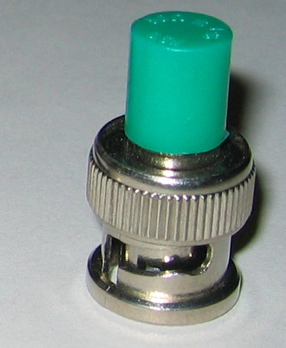
Barramento: Vantagens e Desvantagens
✅ Vantagens
- Barato (pouco cabo).
- Fácil de instalar (no início).
- Não precisa de equipamento central (hub).
❌ Desvantagens
- Se o cabo principal quebrar, PARA TUDO.
- Difícil achar onde está o defeito.
- Lenta com muitos usuários (muita colisão).
Teste Prático: Barramento
Olhe para o painel abaixo.
O simulador está configurado em Barramento.
Atividade: Clique em "Cortar Cabo" e veja o status.
Note como a falha é crítica.
2. Topologia em Anel (Ring)
Os computadores são conectados em série, formando um circuito fechado (círculo).
O dado viaja em uma direção passando de mão em mão.
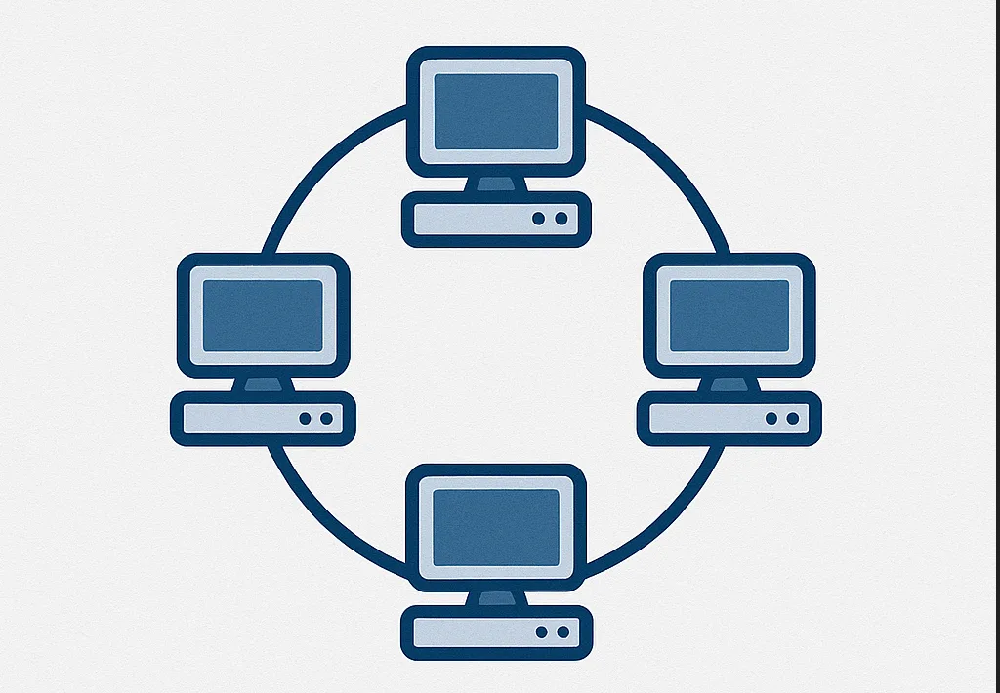
Token Ring (O Bastão)
Para evitar colisões, usa-se um Token (ficha).
- Só quem tem o Token pode falar.
- Funciona igual uma brincadeira de "batata quente" ou passar o bastão.
- Resultado: Zero colisão! Desempenho garantido.
Anel: Vulnerabilidade
Apesar de organizado, o anel clássico tem um defeito fatal.
Se UM computador desligar ou o cabo romper em UM ponto...
⭕ ✂️ 💀
O círculo se quebra e a rede para (na versão unidirecional simples).
Anel Duplo (FDDI)
Para resolver a falha, criou-se o Anel Duplo (Dual Ring).
- Dois anéis: um gira no sentido horário, outro no anti-horário.
- Se o anel principal quebra, o secundário assume (backup).
- Muito usado em redes de fibra óptica antigas (FDDI) para backbones de cidades.
Teste Prático: Anel
O simulador mudou para Anel.
Considere um anel simples (não duplo).
Clique em cortar cabo: A comunicação é interrompida pois o ciclo não fecha.
3. Topologia em Estrela (Star)
Todos os cabos vão para um Ponto Central (Concentrador).
É a topologia padrão hoje (Ethernet com cabo par trançado).
O ponto central pode ser um Hub ou um Switch.
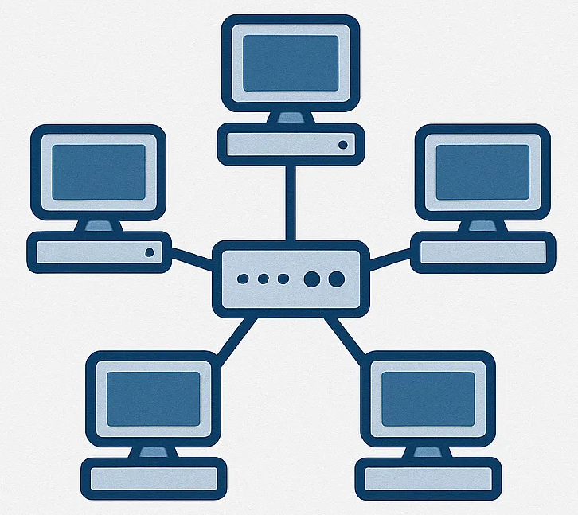
O Concentrador: Hub vs Switch
Hub (Burro) 📢
Recebe a mensagem de A e grita para TODOS.
Gera tráfego inútil. Baixa segurança.
Switch (Inteligente) 🧠
Lê o endereço de destino.
Cria um canal direto entre A e B.
Ninguém mais ouve a conversa.
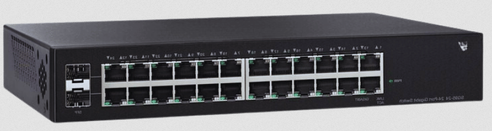
Estrela: A Grande Vantagem
Isolamento de Falhas.
Se o cabo do computador A quebrar...
Apenas o computador A cai. O resto da rede (B, C, D) continua funcionando perfeitamente!
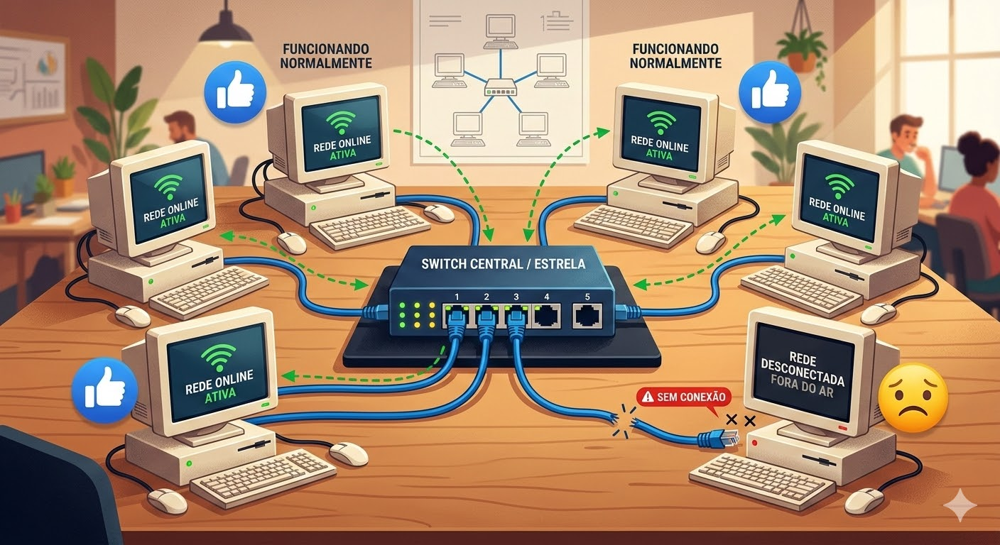
Estrela: O Ponto Único de Falha
Nem tudo são flores.
Se o Concentrador (Switch) queimar...
💀 GAME OVER 💀
A rede inteira para.
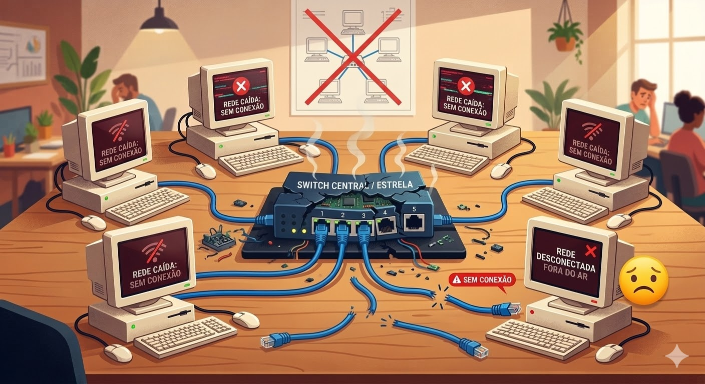
Estrela Estendida
Podemos ligar estrelas em outras estrelas.
- Conectar um Switch em outro Switch (Cascateamento).
- Permite cobrir distâncias maiores e adicionar mais usuários.
- É a estrutura típica de um prédio (Switch de andar -> Switch do prédio).
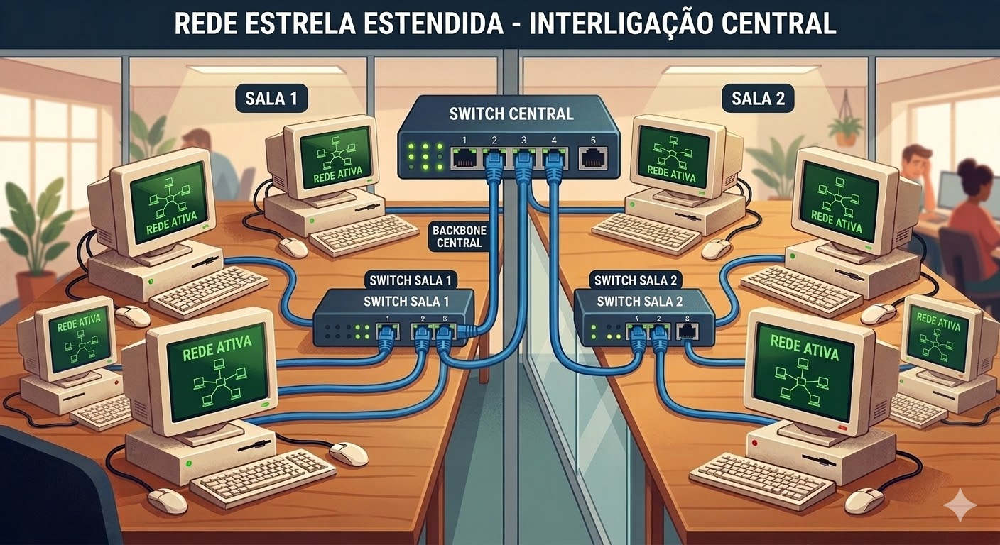
Estrela: Resumo
✅ Vantagens
- Fácil adicionar novos PCs.
- Falha em um PC não afeta os outros.
- Gestão centralizada.
❌ Desvantagens
- Gasta muito cabo (cada PC precisa de um cabo exclusivo até o centro).
- Dependência total do Switch.
Teste Prático: Estrela
O simulador mudou para Estrela.
Clique em Cortar Cabo:
O simulador assume que cortamos o cabo de UM computador.
Resultado? A rede continua "Parcialmente Online" (só um caiu).
4. Topologia em Malha (Mesh)
Cada dispositivo tem uma conexão ponto-a-ponto com todos (ou vários) outros dispositivos.
Não há centro. É uma teia.
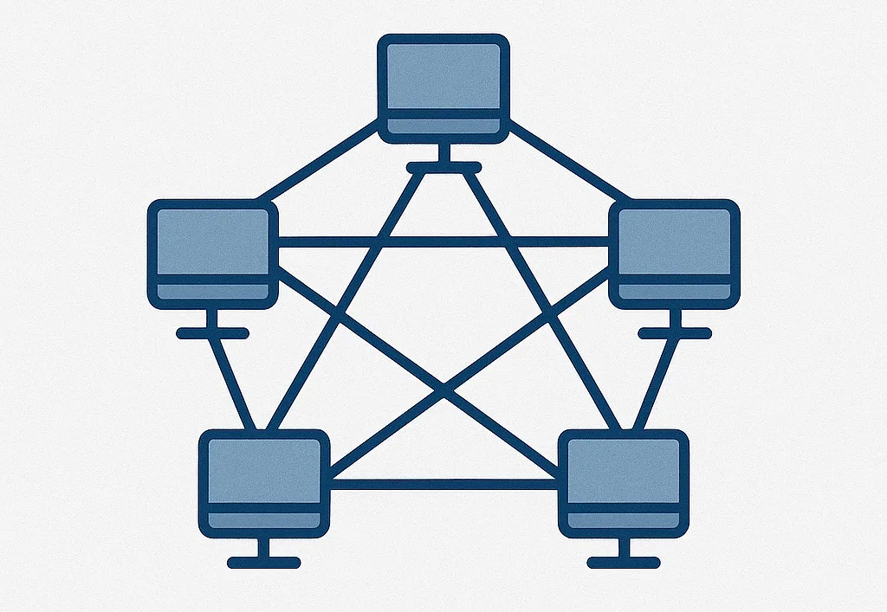
Redundância Máxima
Se um cabo quebrar, existem vários outros caminhos para chegar ao destino.
É a topologia mais confiável e robusta que existe.
Exemplo: A Internet (vários caminhos de fibra entre continentes).
O Custo da Malha
Ligar todo mundo com todo mundo é CARO.
Precisa de muitas placas de rede em cada PC e quilômetros de cabo.
Por isso, raramente é usada em LANs (escritórios), apenas em WANs (Internet) ou sistemas críticos (Usina Nuclear, Controle de Voo).
A Matemática da Malha
Quantos cabos preciso para ligar N computadores em Malha Total?
Onde N é o número de computadores.
Exemplo de Cálculo
Se tivermos 6 computadores em malha total:
- N = 6
- Fórmula: 6 * (6 - 1) / 2
- 6 * 5 / 2
- 30 / 2 = 15 cabos!
Imagine fazer isso com 100 computadores... (4950 cabos!). Inviável.
Teste Prático: Malha
O simulador mudou para Malha.
Clique em Cortar Cabo:
Veja a mágica! O status continua ✅ ONLINE.
O sistema automaticamente usou uma rota alternativa.
5. Topologia em Árvore (Tree)
É uma variação da Estrela.
Existe uma hierarquia: Um nó raiz conecta outros hubs/switches, que conectam os computadores.
Parece uma árvore genealógica ou organograma de empresa.
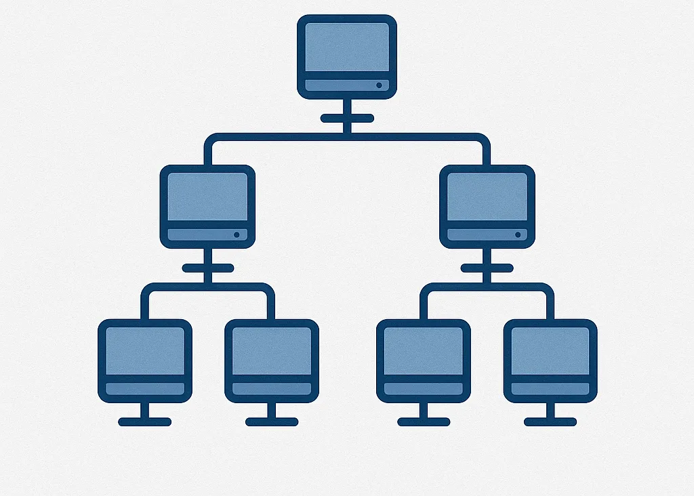
Árvore: Aplicação
- Muito usada em Redes de Campus Universitários.
- Prédio Central -> Prédio de Engenharia -> Laboratório 1.
- Facilita a gestão por setores.
- Se a raiz cai, os galhos ficam isolados uns dos outros.
6. Topologia Híbrida
No mundo real, não seguimos uma regra só.
Misturamos tudo!
Exemplo: Várias redes em Estrela (departamentos) interligadas por um Barramento ou Anel de fibra óptica.
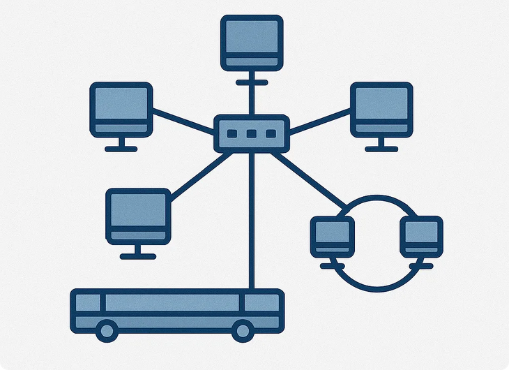
Ponto a Ponto (Point-to-Point)
A mais simples de todas.
Apenas dois dispositivos ligados diretamente.
Ex: Conectar dois roteadores via fibra em longa distância.
Ex: Cabo Cross-over entre dois PCs.
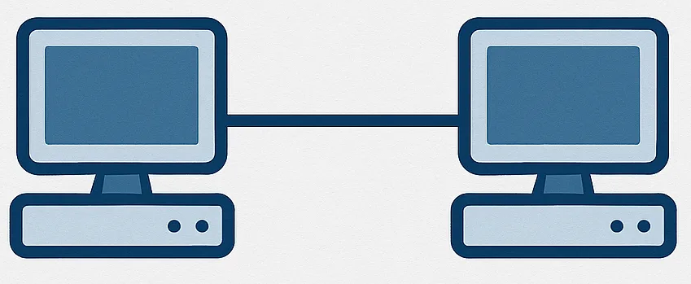
Wireless (Sem Fio)
Como funciona o Wi-Fi?
Logicamente, o Wi-Fi funciona muito parecido com o Barramento (com colisões!), mas centralizado num Ponto de Acesso (AP).
Chamamos de modo Infraestrutura (Estrela sem fio) ou Ad-hoc (Malha/P2P sem fio).
Qual escolher?
Critérios de decisão:
| Critério | Melhor Opção |
|---|---|
| Custo Baixo (Instalação) | Estrela (Equipamentos baratos) |
| Confiabilidade (Crítico) | Malha (Mesh) |
| Facilidade de Manutenção | Estrela |
O Padrão de Mercado
99% das redes locais (LAN) cabeadas hoje usam ESTRELA (ou Estrela Estendida).
Por quê? O custo do cabo caiu e a facilidade de manutenção supera o gasto extra.
Resumo Visual
🚌 Barramento: Varal de roupas. Um fio só. Colisão.
💍 Anel: Roda de ciranda. Bastão passa de mão em mão.
⭐ Estrela: Raios de bicicleta. Tudo vai pro centro (Switch).
🕸️ Malha: Teia de aranha. Muitos caminhos. Caro.
Exercício Rápido
Se eu tenho um escritório com 10 computadores e quero gastar o mínimo possível, mas garantir que se um PC queimar os outros continuem trabalhando...
Qual topologia uso?
Estrela!
Próximos Passos
Agora que sabemos conectar fisicamente (Topologia)...
Precisamos saber COMO eles falam.
Na próxima aula: Modelo OSI e TCP/IP.
Fim da Aula 02
Dúvidas?
Não esqueçam de brincar com o simulador abaixo antes de fechar.